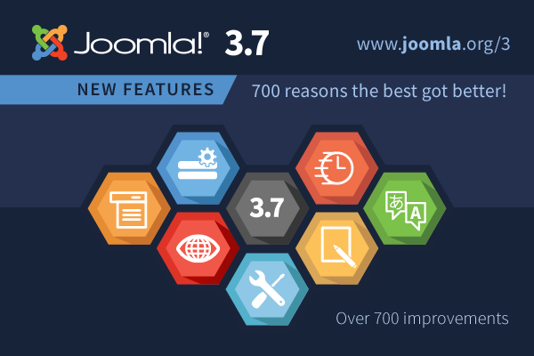

JUG Wallonie
Rencontre du 11 mars 2017Agenda
- Sécurité & Hacking
- Joomla 3.7 : un premier survol des nouveautés
- Joomla 4 : preview de la nouvelle interface
- Questions ouvertes
- Lunch
Télécharger cette présentation
Cette présentation est téléchargeable pour lecture en mode offline et/ou afin d'en simplifier son impression : format pdf
Lire notre rapport de réunion
Le rapport s'ouvrira dans un nouvel ongletJurgen Gaeremyn - Slideshare
Version online | Version offline
Joomla 3.7
Joomla! 3.7 Imagery
Quelques liens
- https://www.joomanji.fr/ - Blog de Cyrille Poussin, réalisé 3.7 et abordant les nouveautés de cette version
- The next version of Joomla! is just around the corner
- Joomla! 3.7 Imagery
Évènements à venir
- JUG Vlaanderen - Samedi 18 mars
- https://www.joomladagen.nl - JoomlaDagen 2017 - Du vendredi 31 mars au dimanche 2 avril
- https://www.joomladay.fr - JoomlaDay 2017 - Du vendredi 12 mai au samedi 13 mai